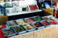
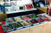
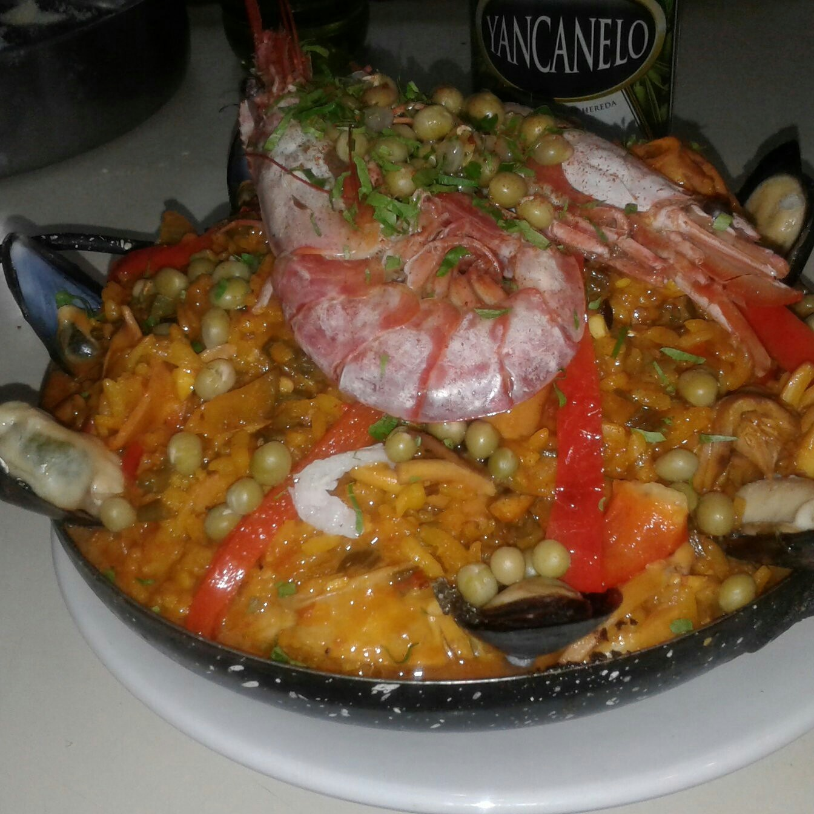
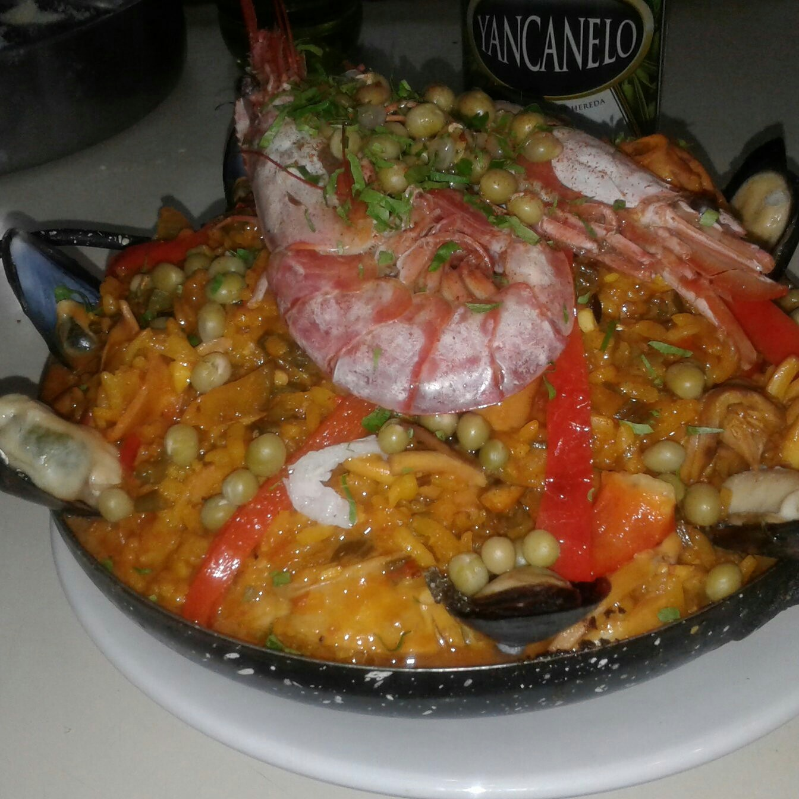
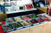
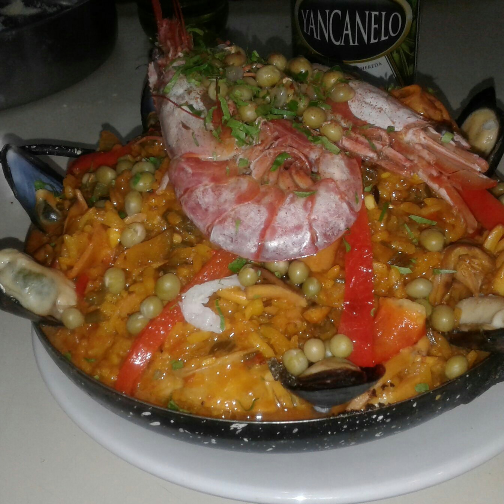

 


LA ELEGIDA POR POL-KA PARA LAS MEJORES PRODUCCIONES: EL SODERO DE MI VIDA - ILUSIONES - MUJERES ASESINAS CANTINA CHICHILO DE BUENOS AIRES DESDE HACE 65 AnOS AL SERVICIO DEL BUEN COMER / ATENDIDOS POR SUS DUEnOS EN UN BARRIO DE FAMOSOS "LA PATERNAL" CANTINA ITALIANA CHICHILO DE BUENOS AIRES CAMARONES 1901 ESQUINA TERRERO 2006 (1416) CAPITAL FEDERAL - REPUBLICA ARGENTINA (54-011-4584-1263) / (11-50-200-152) DE JUEVES A SABADOS DE 20.30 A 00.00 HRS SABADOS Y DOMINGOS DE 12.30 A 14.30 HRS.

